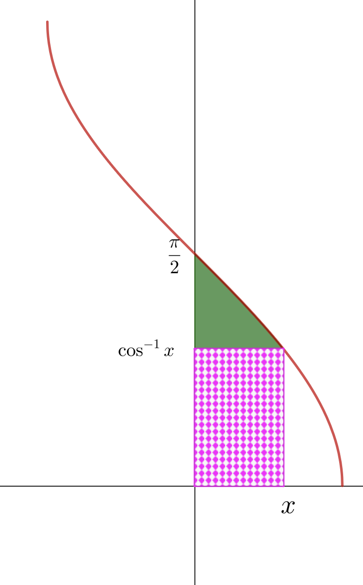

Welcome to Inverse Circular Functions: Extension 2
This extension stage covers the derivatives of arcsec, arccosec, and arccot — \(\frac{\mathrm{d}}{\mathrm{d}x}\mathrm{arcsec}\,x\), etc. — derived using implicit differentiation.
The same implicit differentiation technique from Part 3 applies here!
Dr Brian Brooks
Mathematics InSight
differentials of \(\boldsymbol{\operatorname{arcsec} x}\), \(\boldsymbol{\operatorname{arccosec} x}\), and \(\boldsymbol{\operatorname{arccot} x}\)
Find \(\dfrac{\mathrm{d}}{\mathrm{d}x}\operatorname{arcsec} x\) by two methods.
Method 1 — implicit differentiation
Let \(y = \operatorname{arcsec} x\), so \(x = \sec y\) with \(y \in [0,\pi]\setminus\{\tfrac{\pi}{2}\}\).
(a) Find \(\dfrac{\mathrm{d}x}{\mathrm{d}y}\) in terms of \(y\).
(b) Use the identity \(\sec^2 y - \tan^2 y = 1\) to express \(\tan^2 y\) in terms of \(x\). For \(y \in [0, \tfrac{\pi}{2})\), is \(\tan y\) positive or negative?
(c) Hence find \(\dfrac{\mathrm{d}y}{\mathrm{d}x}\) in terms of \(x\).
Method 2 — using \(\boldsymbol{\operatorname{arcsec} x = \arccos\!\left(\dfrac{1}{x}\right)}\)
(d) Differentiate using the chain rule to confirm your answer.
Find \(\dfrac{\mathrm{d}}{\mathrm{d}x}\operatorname{arcsec} x\) by two methods.
Method 1:
\[\begin{aligned} &x = \sec y \;\Rightarrow\; \frac{\mathrm{d}x}{\mathrm{d}y} = \sec y\tan y\\[8pt] &\tan^2 y = \sec^2 y - 1 = x^2-1\\[6pt] &\text{For } y\in\bigl[0,\tfrac{\pi}{2}\bigr)\!:\; \tan y \geq 0,\;\text{so } \tan y = \sqrt{x^2-1}\\[8pt] &\frac{\mathrm{d}y}{\mathrm{d}x} = \frac{1}{\sec y\tan y} = \frac{1}{x\sqrt{x^2-1}} \end{aligned}\]Method 2:
\[\frac{\mathrm{d}}{\mathrm{d}x}\arccos\left(\frac{1}{x}\right) = \frac{-1}{\sqrt{1-\tfrac{1}{x^2}}}\cdot\left(-\frac{1}{x^2}\right) = \frac{1}{x^2\sqrt{\tfrac{x^2-1}{x^2}}} = \frac{1}{x\sqrt{x^2-1}}\] \[\boxed{\frac{\mathrm{d}}{\mathrm{d}x}\operatorname{arcsec} x = \frac{1}{x\sqrt{x^2-1}}, \quad x > 1}\]
Use a similar approach to find \(\dfrac{\mathrm{d}}{\mathrm{d}x}\operatorname{arccosec} x\).
Method 1: Let \(y = \operatorname{arccosec} x\), so \(x = \operatorname{cosec}\, y\). Find \(\dfrac{\mathrm{d}x}{\mathrm{d}y}\) and use \(\cot^2 y = \operatorname{cosec}^2 y - 1\).
Method 2: Use \(\operatorname{arccosec} x = \arcsin\left(\dfrac{1}{x}\right)\) and differentiate by the chain rule.
Find \(\dfrac{\mathrm{d}}{\mathrm{d}x}\operatorname{arccosec} x\).
Method 1:
\[\begin{aligned} &x = \operatorname{cosec}\, y \;\Rightarrow\; \frac{\mathrm{d}x}{\mathrm{d}y} = -\operatorname{cosec}\, y\cot y\\[8pt] &\cot^2 y = \operatorname{cosec}^2 y - 1 = x^2-1\\[6pt] &\text{For } y\in\bigl(0,\tfrac{\pi}{2}\bigr]\!:\; \cot y \geq 0,\;\text{so } \cot y = \sqrt{x^2-1}\\[8pt] &\frac{\mathrm{d}y}{\mathrm{d}x} = \frac{-1}{x\sqrt{x^2-1}} \end{aligned}\] \[\boxed{\frac{\mathrm{d}}{\mathrm{d}x}\operatorname{arccosec} x = \frac{-1}{x\sqrt{x^2-1}}, \quad x > 1}\]Now find \(\dfrac{\mathrm{d}}{\mathrm{d}x}\operatorname{arccot} x\) by two methods.
Method 1: Let \(y = \operatorname{arccot} x\), so \(x = \cot y\). Find \(\dfrac{\mathrm{d}x}{\mathrm{d}y}\) and use a Pythagorean identity.
Method 2: Differentiate both sides of \(\operatorname{arccot} x + \arctan x = \dfrac{\pi}{2}\).
Find \(\dfrac{\mathrm{d}}{\mathrm{d}x}\operatorname{arccot} x\).
Method 1:
\[\begin{aligned} &x = \cot y \;\Rightarrow\; \frac{\mathrm{d}x}{\mathrm{d}y} = -\operatorname{cosec}^2 y\\[8pt] &\operatorname{cosec}^2 y = 1 + \cot^2 y = 1 + x^2\\[8pt] &\frac{\mathrm{d}y}{\mathrm{d}x} = \frac{-1}{1+x^2} \end{aligned}\]Method 2:
\[\frac{\mathrm{d}}{\mathrm{d}x}\!\left(\operatorname{arccot} x + \arctan x\right) = 0 \;\Rightarrow\; \frac{\mathrm{d}}{\mathrm{d}x}\operatorname{arccot} x = -\frac{1}{1+x^2}\] \[\boxed{\frac{\mathrm{d}}{\mathrm{d}x}\operatorname{arccot} x = \frac{-1}{1+x^2}}\]
Well done on completing Extension 2!
You have derived the derivatives of arcsec, arccosec, and arccot using implicit differentiation.
Continue to the additional material in Part 7.
Dr Brian Brooks
Mathematics InSight